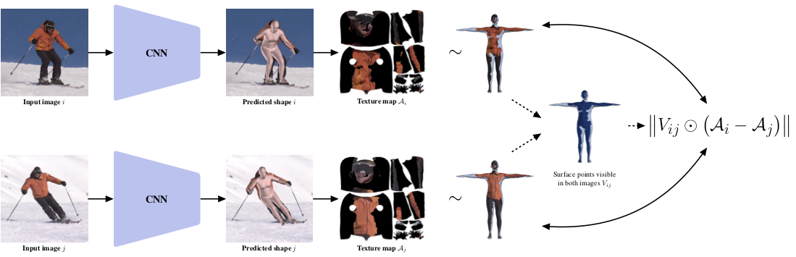

TexturePose: Supervising Human Mesh Estimation with Texture Consistency
Abstract
This work addresses the problem of model-based human pose estimation. Recent approaches have made significant progress towards regressing the parameters of parametric human body models directly from images. Because of the absence of images with 3D shape ground truth, relevant approaches rely on 2D annotations or sophisticated architecture designs. In this work, we advocate that there are more cues we can leverage, which are available for free in natural images, i.e., without getting more annotations, or modifying the network architecture. We propose a natural form of supervision, that capitalizes on the appearance constancy of a person among different frames (or viewpoints). This seemingly insignificant and often overlooked cue goes a long way for model-based pose estimation. The parametric model we employ allows us to compute a texture map for each frame. Assuming that the texture of the person does not change dramatically between frames, we can apply a novel texture consistency loss, which enforces that each point in the texture map has the same texture value across all frames. Since the texture is transferred in this common texture map space, no camera motion computation is necessary, or even an assumption of smoothness among frames. This makes our proposed supervision applicable in a variety of settings, ranging from monocular video, to multi-view images. We benchmark our approach against strong baselines that require the same or even more annotations that we do and we consistently outperform them. Simultaneously, we achieve state-of-the-art results among model-based pose estimation approaches in different benchmarks. The project website with videos, results, and code can be found at https://seas.upenn.edu/~pavlakos/projects/texturepose.
TexturePose

For simplicity, assume that the input during training consists of two images i, j of the same person. The main assumption is that the appearance of the person does not change dramatically across the input images, i.e., the frames come from short monocular videos or from time-synchronized multi-view cameras. We apply our deep network on both images and estimate the shape of the person. Subsequently, we project the predicted shape on the image, and after inferring visibility for each point on the surface, we build the texture maps. The crucial observation, that the appearance of the person remains constant, translates to a texture consistency loss, forcing the two texture maps to be the same for all surface points that are visible in both images. This loss acts as supervision for the network and complements other weak losses that are typically used in the training of these regressor networks.
Acknowledgements
The authors gratefully appreciate support through the following grants: NSF-IIP-1439681 (I/UCRC), NSF-IIS-1703319, NSF MRI 1626008, ARL RCTA W911NF-10-2-0016, ONR N00014-17-1-2093, ARL DCIST CRA W911NF-17-2-0181, the DARPA-SRC C-BRIC, by Honda Research Institute and a Google Daydream Research Award.